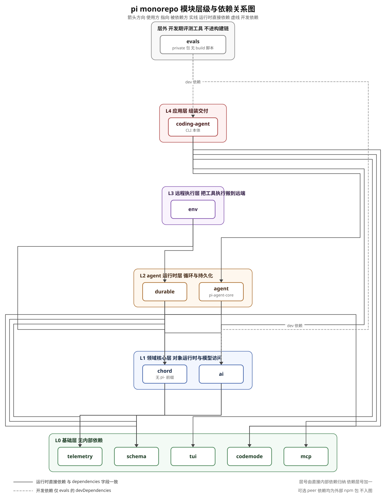

箭头方向 使用方 指向 被依赖方。实线为运行时直接依赖 取自各包 dependencies。虚线为开发依赖 只有 evals 的 devDependencies。层外节点不进构建链。可编辑图源为同目录 模块依赖图.mmd。
flowchart TD
subgraph LX["层外 开发期评测工具 不进构建链"]
DEV["evals<br>private 包 无 build 脚本"]
end
subgraph L4["L4 应用层 组装交付"]
CA["coding-agent<br>CLI 本体"]
end
subgraph L3["L3 远程执行层 把工具执行搬到远端"]
ENV["env"]
end
subgraph L2["L2 agent 运行时层 循环与持久化"]
DUR["durable"]
AG["agent<br>pi-agent-core"]
end
subgraph L1["L1 领域核心层 对象运行时与模型访问"]
CH["chord<br>无 pi- 前缀"]
AI["ai"]
end
subgraph L0["L0 基础层 无内部依赖"]
TEL["telemetry"]
SCH["schema"]
TUI["tui"]
CM["codemode"]
MCP["mcp"]
end
CA --> AG
CA --> AI
CA --> CM
CA --> MCP
CA --> TUI
AG --> AI
AG --> SCH
DUR --> CH
DUR --> AI
DUR --> CM
DUR --> SCH
DUR --> TEL
ENV --> CH
ENV --> DUR
AI --> SCH
AI --> TEL
CH --> SCH
CH --> TEL
DEV -. dev 依赖 .-> AI
DEV -. dev 依赖 .-> CA
classDef l0 fill:#e9f5ec,stroke:#3f7f4f,color:#14351c
classDef l1 fill:#e7effc,stroke:#3c5fa8,color:#112340
classDef l2 fill:#fdf0e0,stroke:#a86a2a,color:#3f2410
classDef l3 fill:#f3e8fb,stroke:#7a4aa8,color:#2c1740
classDef l4 fill:#fbe6e6,stroke:#a83c3c,color:#3f1010
classDef dev fill:#f2f2f2,stroke:#777777,color:#222222,stroke-dasharray:4 4
class TEL,SCH,TUI,CM,MCP l0
class CH,AI l1
class DUR,AG l2
class ENV l3
class CA l4
class DEV dev
mermaid CDN 不可达 下面显示同源导出的矢量图。
